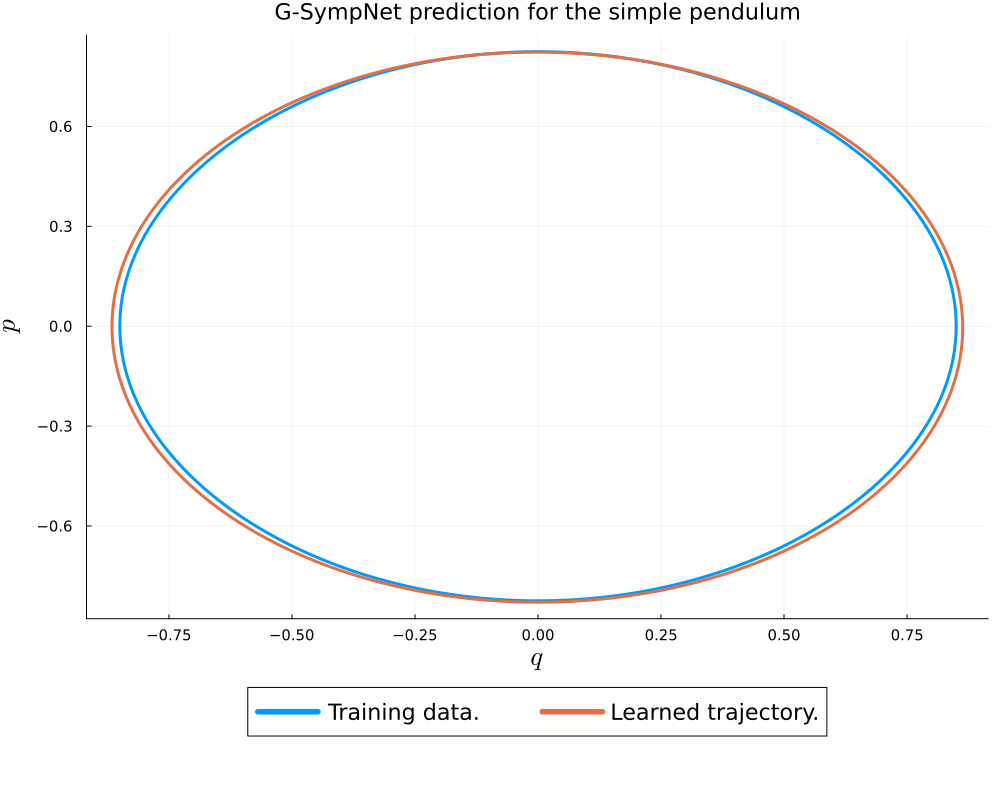

SympNet
This page documents the SympNet architecture and its implementation in GeometricMachineLearning.jl.
Quick overview of the theory of SympNet
Principle
SympNets is a new type of neural network proposing a new approach to compute the trajectory of an Hamiltonian system in phase space. Let us denote by $(q,p)=(q_1,...,q_d,p_1,....p_d)\in \mathbb{R}^{2d}$ the phase space with $q\in \mathbb{R}^{d}$ the generalized position and $p\in \mathbb{R}^{d}$ the generalized momentum. Given a physical problem, SympNets takes a phase space element $(q,p)$ and aims to compute the next position $(q',p')$ of the trajectory in phase space a time step later while preserving the well known symplectic structure of Hamiltonian systems. The way SympNet preserve the symplectic structure is really specific and characterizes it as this preserving is intrinsic of the neural network. Indeed, SympNet is not made with traditional layers but with symplectic layers (described later) modifying the traditional universal approximation theorem into a symplectic one : SympNet is able to approach any symplectic function providing conditions on an activation function.
SympNet (noted $\Phi$ in the following) is so an integrator from $\mathbb{R}^{d} \times \mathbb{R}^{d}$ to $\mathbb{R}^{d} \times \mathbb{R}^{d}$ preserving symplecticity which can compute, from an initial condition $(q_0,p_0)$, a sequence of phase space elements of a trajectory $(q_n,p_n)=\Phi(q_{n-1},p_{n-1})=...=\Phi^n(q_0,p_0)$. The time step between predictions is not a parameter we can choose but is related to the temporal frequency of the training data. SympNet can handle both temporally regular data, i.e with a fix time step between data, and temporally irregular data, i.e with variable time step.
Architecture of SympNets
With GeometricMachineLearning.jl, it is possible to implement two types of architecture which are LA-SympNet and G-SympNet.
LA-SympNet

LA-SympNets are made of the alternation of two types of layers, symplectic linear layers and symplectic activation layers. For a given integer $n$, a symplectic linear layer is defined by
\[\mathcal{L}^{n,up} \begin{pmatrix} q \\ p \\ \end{pmatrix} = \begin{pmatrix} I & S^n/0 \\ 0/S^n & I \\ \end{pmatrix} \cdots \begin{pmatrix} I & 0 \\ S^2 & I \\ \end{pmatrix} \begin{pmatrix} I & S^1 \\ 0 & I \\ \end{pmatrix} \begin{pmatrix} q \\ p \\ \end{pmatrix} + b ,\]
or
\[\mathcal{L}^{n,low} \begin{pmatrix} q \\ p \end{pmatrix} = \begin{pmatrix} I & 0/S^n \\ S^n/0 & I \end{pmatrix} \cdots \begin{pmatrix} I & S^2 \\ 0 & I \end{pmatrix} \begin{pmatrix} I & 0 \\ S^1 & I \end{pmatrix} \begin{pmatrix} q \\ p \end{pmatrix} + b . \]
The parameters to learn are the symmetric matrices $S^i\in\mathbb{R}^{d\times d}$ and the bias $b\in\mathbb{R}^{2d}$. The integer $n$ is the width of the symplectic linear layer. If $n\geq9$, we know that the symplectic linear layers represent any linear symplectic map so that $n$ need not be larger than 9. We note the set of symplectic linear layers $\mathcal{M}^L$. This type of layers plays the role of standard linear layers.
For a given activation function $\sigma$, a symplectic activation layer is defined by
\[ \mathcal{A}^{up} \begin{pmatrix} q \\ p \end{pmatrix} = \begin{bmatrix} I&\hat{\sigma}^{a} \\ 0&I \end{bmatrix} \begin{pmatrix} q \\ p \end{pmatrix} := \begin{pmatrix} \mathrm{diag}(a)\sigma(p)+q \\ p \end{pmatrix},\]
or
\[ \mathcal{A}^{low} \begin{pmatrix} q \\ p \end{pmatrix} = \begin{bmatrix} I&0 \\ \hat{\sigma}^{a}&I \end{bmatrix} \begin{pmatrix} q \\ p \end{pmatrix} := \begin{pmatrix} q \\ \mathrm{diag}(a)\sigma(q)+p \end{pmatrix}.\]
The parameters to learn are the weights $a\in\mathbb{R^{d}}$. This type of layers plays the role of standard activation layers layers. We note the set of symplectic activation layers $\mathcal{M}^A$.
A LA-SympNet is a function of the form $\Psi=l_{k+1} \circ a_{k} \circ v_{k} \circ \cdots \circ a_1 \circ l_1$ where $(l_i)_{1\leq i\leq k+1} \subset (\mathcal{M}^L)^{k+1}$ and
\[(a_i)_{1\leq i\leq k} \subset (\mathcal{M}^A)^{k}\]
.
G-SympNet
G-SympNets are an alternative to LA-SympNet. They are constituated with only one kind of layers called gradient layers. For a given activation function $\sigma$ and an integer $n\geq d$, a gradient layers is a symplectic map from $\mathbb{R}^{2d}$ to $\mathbb{R}^{2d}$ defined by
\[ \mathcal{G}^{up} \begin{pmatrix} q \\ p \end{pmatrix} = \begin{bmatrix} I&\hat{\sigma}^{K,a,b} \\ 0&I \end{bmatrix} \begin{pmatrix} q \\ p \end{pmatrix} := \begin{pmatrix} K^T \mathrm{diag}(a)\sigma(Kp+b)+q \\ p \end{pmatrix},\]
or
\[ \mathcal{G}^{low} \begin{pmatrix} q \\ p \end{pmatrix} = \begin{bmatrix} I&0 \\ \hat{\sigma}^{K,a,b}&I \end{bmatrix} \begin{pmatrix} q \\ p \end{pmatrix} := \begin{pmatrix} q \\ K^T \mathrm{diag}(a)\sigma(Kq+b)+p \end{pmatrix}.\]
The parameters of this layer are the scale matrix $K\in\mathbb{R}^{n\times d}$, the bias $b\in\mathbb{R}^{n}$ and the vector of weights $a\in\mathbb{R}^{n}$. The idea is that $\hat{\sigma}^{K,a,b}$ can approximate any function of the form $\nabla V$, hence the name of this layer. The integer $n$ is called the width of the gradient layer.
If we note by $\mathcal{M}^G$ the set of gradient layers, a G-SympNet is a function of the form $\Psi=g_k \circ g_{k-1} \circ \cdots \circ g_1$ where $(g_i)_{1\leq i\leq k} \subset (\mathcal{M}^G)^k$.
Universal approximation theorems
We give now properly the universal approximation for both architectures. But let us give few definitions before.
Let $U$ be an open set of $\mathbb{R}^{2d}$, and let us note by $SP^r(U)$ the set of $C^r$ smooth symplectic maps on $U$. Let us give a topology on the set of $C^r$ smooth maps from a compact K of $\mathbb{R}^{n}$ to $\mathbb{R}^{n}$ for any positive integers $n$ through the norm
\[||f||_{C^r(K,\mathbb{R}^{n})} = \underset{|\alpha|\leq r}{\sum} \underset{1\leq i \leq n}{\max}\underset{x\in K}{\sup} |D^\alpha f_i(x)|\]
where the differential operator $D^\alpha$ is defined for any map of $C^r(\mathbb{R}^{n},\mathbb{R})$ by
\[D^\alpha f = \frac{\partial^{|\alpha|} f}{\partial x_1^{\alpha_1}...x_n^{\alpha_n}}\]
with $|\alpha| = \alpha_1 +...+ \alpha_n$.
Definition Let $\sigma$ a real map and $r\in \mathbb{N}$. $\sigma$ is r-finite if $\sigma\in C^r(\mathbb{R},\mathbb{R})$ and $\int |D^r\sigma(x)|dx <+\infty$.
Definition Let $m,n,r\in \mathbb{N}$ with $m,n>0$ be given, $U$ an open set of $\mathbb{R}^m$, and $I,J\subset C^r(U,\mathbb{R}^n$. We say $J$ is r-uniformly dense on compacta in $I$ if $J \subset I$ and for any $f\in I$, $\epsilon>0$, and any compact $K\subset U$, there exists $g\in J$ such that $||f-g||_{C^r(K,\mathbb{R}^{n})} < \epsilon$.
We can now gives the theorems.
Theorem (Approximation theorem for LA-SympNet) For any positive integer $r>0$ and open set $U\in \mathbb{R}^{2d}$, the set of LA-SympNet is r-uniformly dense on compacta in $SP^r(U)$ if the activation function $\sigma$ is r-finite.
Theorem (Approximation theorem for G-SympNet) For any positive integer $r>0$ and open set $U\in \mathbb{R}^{2d}$, the set of G-SympNet is r-uniformly dense on compacta in $SP^r(U)$ if the activation function $\sigma$ is r-finite.
These two theorems are at odds with the well-foundedness of the SympNets.
Example of r-finite functions
- sigmoid $\sigma(x)=\frac{1}{1+e^{-x}}$ for any positive integer $r$,
- tanh $\tanh(x)=\frac{e^x-e^{-x}}{e^x+e^{-x}}$ for any positive integer $r$.
SympNet with GeometricMachineLearning.jl
With GeometricMachineLearning.jl, it is really easy to implement and train a SympNet. The steps are the following :
- Create the architecture in one line with the function
GSympNetorLASympNet, - Create the neural networks depending a backend (e.g. with Lux),
- Create an optimizer for the training step,
- Train the neural networks with the
train!function.
Both LA-SympNet and G-SympNet architectures can be generated in one line with GeometricMachineLearning.jl.
LA-SympNet
To create a LA-SympNet, one needs to write
lasympnet = LASympNet(dim; width=9, nhidden=1, activation=tanh, init_uplow_linear=[true,false],
init_uplow_act=[true,false],init_sym_matrices=Lux.glorot_uniform, init_bias=Lux.zeros32,
init_weight=Lux.glorot_uniform) LASympNet takes one obligatory argument:
- dim : the dimension of the phase space,
and several keywords argument :
- width : the width for all the symplectic linear layers with default value set to 9 (if width>9, width is set to 9),
- nhidden : the number of pairs of symplectic linear and activation layers with default value set to 0 (i.e LA-SympNet is a single symplectic linear layer),
- activation : the activation function for all the symplectic activations layers with default value set to tanh,
- inituplowlinear : a vector of boolean whose the ith coordinate is true only if all the symplectic linear layers in (i mod
length(init_uplow_linear))-th position is up (for example the default value is [true,false] which represents an alternation of up and low symplectic linear layers), - inituplowact : a vector of boolean whose the ith coordinate is true only if all the symplectic activation layers in (i mod
length(init_uplow_act))-th position is up (for example the default value is [true,false] which represents an alternation of up and low symplectic activation layers), - initsymmatrices: the function which gives the way to initialize the symmetric matrices $S^i$ of symplectic linear layers,
- init_bias: the function which gives the way to initialize the vector of bias $b$,
- init_weight: the function which gives the way to initialize the weight $a$.
The default value of the last three keyword arguments uses Lux functions.
G-SympNet
To create a G-SympNet, one needs to write
gsympnet = GSympNet(dim; width=dim, nhidden=1, activation=tanh, init_uplow=[true,false], init_weight=Lux.glorot_uniform,
init_bias=Lux.zeros32, init_scale=Lux.glorot_uniform) GSympNet takes one obligatory argument:
- dim : the dimension of the phase space,
and severals keywords argument :
- width : the width for all the gradients layers with default value set to dim to have width$\geq$dim,
- nhidden : the number of gradient layers with default value set to 1,
- activation : the activation function for all the gradients layers with default value set to tanh,
- init_uplow: a vector of boolean whose the ith coordinate is true only if all the gradient layers in (i mod
length(init_uplow))-th position is up (for example the default value is [true,false] which represents an alternation of up and low gradient layers), - init_weight: the function which gives the way to initialize the vector of weights $a$,
- init_bias: the function which gives the way to initialize the vector of bias $b$,
- init_scale: the function which gives the way to initialize the scale matrix $K$.
The default value of the last three keyword arguments uses Lux functions.
Loss function
To train the SympNet, one need data along a trajectory such that the model is trained to perform an integration. These data are $(Q,P)$ where $Q[i,j]$ (respectively $P[i,j]$) is the real number $q_j(t_i)$ (respectively $p[i,j]$) which is the j-th coordinates of the generalized position (respectively momentum) at the i-th time step. One also need a loss function defined as :
\[Loss(Q,P) = \underset{i}{\sum} d(\Phi(Q[i,-],P[i,-]), [Q[i,-] P[i,-]]^T)\]
where $d$ is a distance on $\mathbb{R}^d$.
Examples
Let us see how to use it on several examples.
Example of a pendulum with G-SympNet
Let us begin with a simple example, the pendulum system, the Hamiltonian of which is
\[H:(q,p)\in\mathbb{R}^2 \mapsto \frac{1}{2}p^2-cos(q) \in \mathbb{R}.\]
The first thing to do is to create an architecture, in this example a G-SympNet.
# number of inputs/dimension of system
const ninput = 2
# layer dimension for gradient module
const ld = 10
# hidden layers
const ln = 4
# activation function
const act = tanh
# Creation of a G-SympNet architecture
gsympnet = GSympNet(ninput, width=ld, nhidden=ln, activation=act)
# Creation of a LA-SympNet architecture
lasympnet = LASympNet(ninput, nhidden=ln, activation=act)Then we can create the neural networks depending on the backend. Here we will use Lux:
# create Lux network
nn = NeuralNetwork(gsympnet, LuxBackend())We have to define an optimizer which will be use in the training of the SympNet. For more details on optimizer, please see the corresponding documentation Optimizer.md. For example, let us use a momentum optimizer :
# Optimiser
opt = MomentumOptimizer(1e-2, 0.5)We can now perform the training of the neural networks. The syntax is the following :
# number of training runs
const nruns = 10000
# Batchsize used to compute the gradient of the loss function with respect to the parameters of the neural networks.
const nbatch = 10
# perform training (returns array that contains the total loss for each training step)
total_loss = train!(nn, opt, data_q, data_p; ntraining = nruns, batch_size = nbatch)The train function will change the parameters of the neural networks and gives an a vector containing the evolution of the value of the loss function during the training. Default values for the arguments ntraining and batch_size are respectively $1000$ and $10$.
The trainings data data_q and data_p must be matrices of $\mathbb{R}^{n\times d}$ where $n$ is the length of data and $d$ is the half of the dimension of the system, i.e data_q[i,j] is $q_j(t_i)$ where $(t_1,...,t_n)$ are the corresponding time of the training data.
Then we can make prediction. Let's compare the initial data with a prediction starting from the same phase space point using the provided function Iterate_Sympnet:
#predictions
q_learned, p_learned = Iterate_Sympnet(nn, q0, p0; n_points = size(data_q,1))